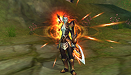
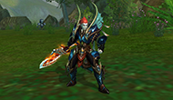

Seeker
A dominant warrior who deftly manipulates a colossal blade; his sword skills are a sight to behold.
Seekers have a long, vicious history with Wraithkind, so much so that their abilities have been honed not for self-improvement, but out of necessity. The burden of their race's survival falls squarely on their broad shoulders, for these are the warriors who occupy the brutal front lines in battle. Though disciplined and methodical on the battlefield, a restless power-mongering nature often compels these earthen champions away from wherever they currently are, and into the world of the unknown.
Type:
Melee Physical Damage Dealer
Weapons:
Swords
Statistics
- Character
- HP
- MP
- Dodge
- Move Speed
- P Atk
- M Atk
- Accuracy
- Blademaster
- 75
- 45
- 50
- 5.0 m/sec
- 4-6
- 1-1
- 50
- Wizzard
- 50
- 70
- 10
- 4.8 m/sec
- 4-4
- 6-7
- 25
- Barbarian
- 85
- 35
- 40
- 4.9 m/sec
- 5-9
- 1-1
- 40
- Venomancer
- 60
- 60
- 30
- 5.1 m/sec
- 4-4
- 6-7
- 25
- Archer
- 65
- 55
- 30
- 5.2 m/sec
- 7-11
- 1-1
- 40
- Cleric
- 50
- 70
- 10
- 4.8 m/sec
- 4-4
- 6-7
- 35
Skill Tree
Northern Sky Waltz
While active, each successful strike on the target has a chance to inflict the "Eye of Northern Sky" status effect.
If Staggering Strike is used on a target with the Eye of Northern Sky status, the target will receive extra damage, become immobilized, and have reduced Defense.
Bladed Fervor
Focuses the spiritual energies of this world to enhance your fighting ability.
Parchedblade Dance
While active, each successful strike on the target has a chance to inflict the "Bloodlet" status effect.
If Stalagstrike is used on a target with the Bloodlet status, the target will receive extra damage and become stunned.
Saber Rattle
Rallies the spirits of the Earth.
Increases the Attack and Defense of yourself and any squad members within 15 meters.
Soulsever Minuet
While active, each successful strike on the target has a chance to cause the "Spirit Bore" status effect.
If Gemini Slash is used on a target with the Spirit Bore status, that target will receive extra Metal damage and have its Attack and Defense reduced.
Krav Maga
Channels the spiritual force of this world.
Increases the Defense of you and your teammates within 15 meters.
Blade and Sword Mastery
Increases all blade and sword weapon damage.
Heart Shatter
Casts a debuff on the target that lowers their Metal and Physical resistance.
Mind Shatter
Casts a debuff on the target that lowers their Wood and Water resistance and increases the critical strike rate on Wood and Water skills.
Soul Shatter
Casts a debuff on the target that lowers their Fire and Earth resistance and increase the critical strike rate and damage for Fire and Earth skills.
Ion Spike
A sword strike that calls upon the powers of lightning.
Has a chance to reduce the target's Metal resistance.
Heartseeker
An attack that goes straight for the heart!
Deals large amounts of Metal damage and has a chance to immobilize the target.
Edged Blur
A continuous strike made possible by a burst of speed. Deals large amounts of Metal damage to targets around you.
Rock Splitting Cleave
A sword slash capable of splitting the hardest of rocks. Deals large amounts of damage.
Staggering Strike
A ranged sword strike that deals Physical damage to the target.
Use on a target with the "Eye of Northern Sky" status to deal additional damage, immobilize the target, and reduce the target's Defense.
Battousai
A ranged blade strike that is so fast, it sends a wave of cutting winds towards the target.
Deals Metal damage to the target.
Stalagstrike
A whirling sword attack that rips the target to ribbons.
Deals large amounts of Physical damage to targets around you.
Can be used in tandem with Parchedblade Dance to deal additional damage and stun enemies.
Darkcloud Bolt
Uses your sword like a lightning rod and calls down a powerful electric bolt.
Deals a large amount of area of effect damage.
Gemini Slash
A ranged sword strike that is so fast, it makes it seem as if there are multiple attackers.
Can be used on a target with the Spirit Bore status to deal extra Metal damage and have its Attack and Defense reduced.
Yataghan Vortex
Deals a large amount of Physical damage every 3 seconds to targets around you.
Spell channels until it is canceled or you run out of Chi.
Unfetter
Increases movement speed.
Blade Affinity
Binds your soul to the spirit of your blade.
Temporarily reduces Channeling time.
Adrenal Numbness
An adrenaline-induced trance that increases your Defense.
Voidstep
Envelopes you in the spiritual energies that allow you to traverse the void for short distances.
Instantly warps you to your target, stunning them.
Quid Pro Quo
Allows your soul to pass through the void to transfer debuffs onto your target.
Screenshots
- 
- 